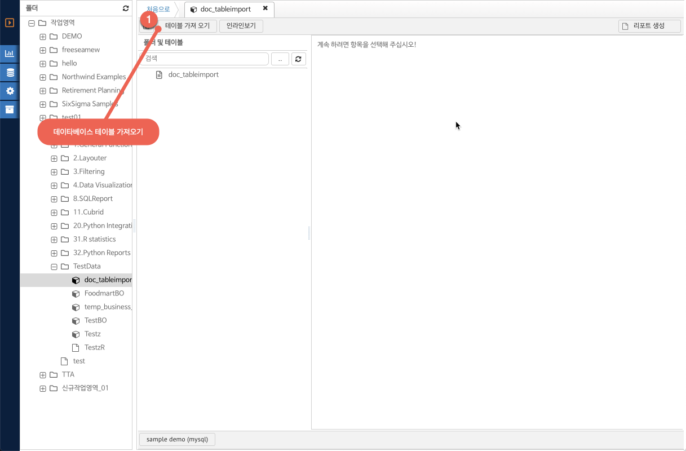
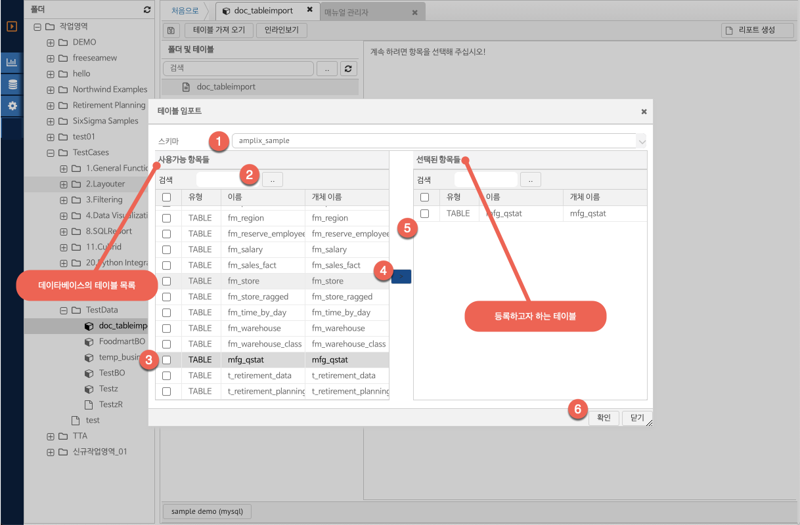
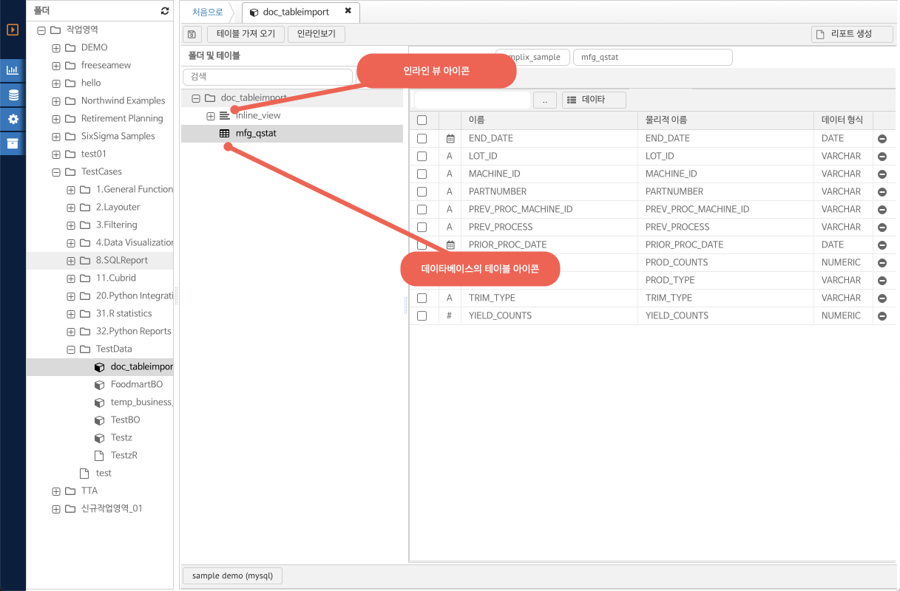

6.3. 테이블 가져오기 및 인라인뷰
테이블 가져오기
비즈니스 오브젝트 툴바의 테이블 가져오기 버튼을 클릭한다.

(그림 : 비즈니스 오브젝트 - 데이터베이스 테이블 가져오기)
테이블 임포트 순서

(그림 : 비즈니스 오브젝트 테이블 가져오기 작업 단계)
1. 등록하고자 하는 데이터베이스 스키마를 선택한다.
2. 스키마 내의 테이블 / 뷰의 목록을 조회한다.
3. 등록하고자 하는 테이블을 목록에서 체크박스 선택한다.
4. 체크 선택된 테이블을 선택 항목으로 이동한다.
5. 비즈니스 오브젝트에 등록되는 테이블 목록을 보여 준다.
6. 확인 버튼을 클릭하여 비즈니스 오브젝트에 추가한다.
생성되는 테이블 가져오기 결과 및 인라인뷰는 아래 그림의 아이콘으로 구분된다.

(그림 : 비즈니스 오브젝트 아이콘 구분)
인라인뷰
인라인뷰는 테이타베이스의 테이블을 이용한 SQL 쿼리를 통해 리포트 생성을 위한 비즈니스 오브젝트 항목을 생성하는 기능을 제공한다.
비즈니스 오브젝트 툴바의 인라인뷰 버튼을 클릭하여 신규 인라인 뷰 항목을 생성할 수 있다. 버튼 클릭시 SQL 쿼리 등록을 위한 입력 다이알로그 화면이 나타난다.

(그림 : 비즈니스 오브젝트 - 인라인 뷰 등록)
1. 뷰이름 : 사용자를 위한 비즈니스 오브젝트 개체의 이름을 입력한다.
2. 등록할 SQL 쿼리를 입력한다.
3. SQL 쿼리의 문법이 데이터베이스에서 오류가 없는지의 여부를 점검하는 기능을 제공한다. SQL 쿼리 문법이 틀린 경우 서버에서의 SQL 실행 오류 에러 메시지를 보여준다.
4. 쿼리의 유효성을 점검한 이후 성공적인 경우 해당 SQL 을 이용한 비즈니스 오브젝트를 생성한다.